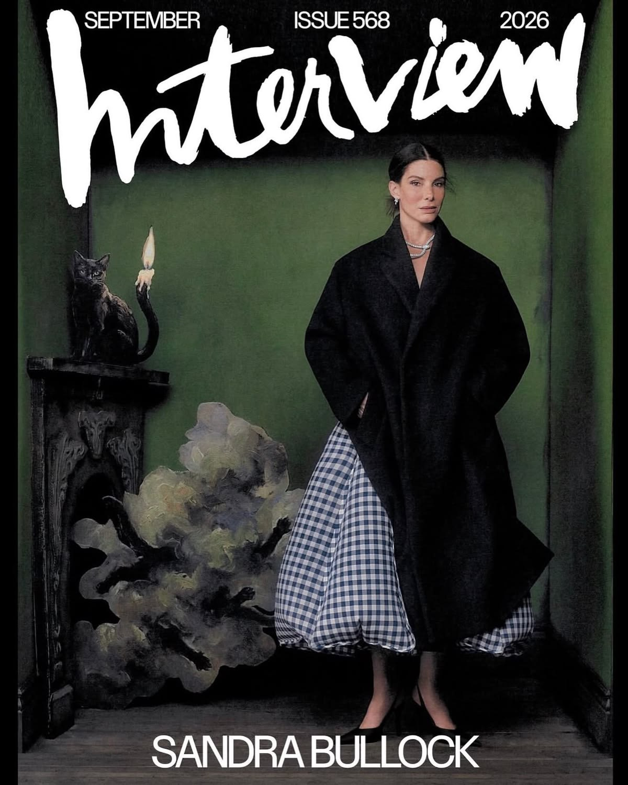

SEPTEMBER 2026 // ISSUE 568
SZILVESZTER MAKO
Descubre al fotógrafo más influyente del 2026.
ABRIENDO EDICIÓN...
HAZ CLIC EN LA PORTADA PARA ABRIR
Descubre al fotógrafo más influyente del 2026.
ABRIENDO EDICIÓN...
HAZ CLIC EN LA PORTADA PARA ABRIR